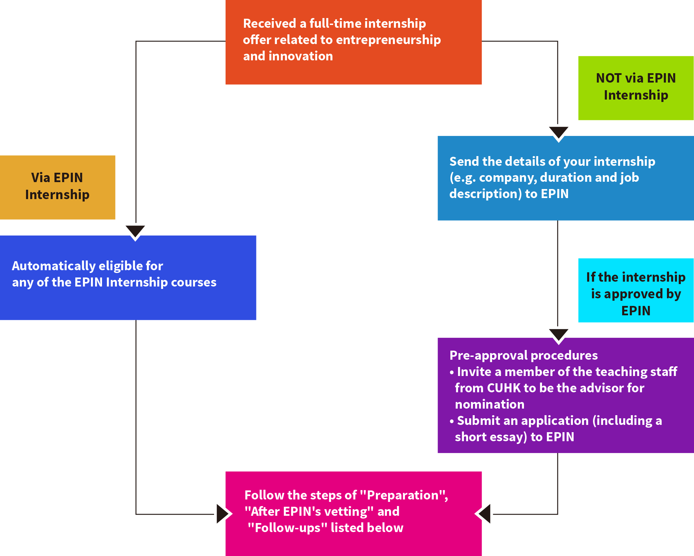

Experiential Learning
learn through practice
Introduction
The overarching principle of EPIN education is to “learn through practice”. Students are encouraged to apply learnings from lectures and readings in a real-world context to deepen their understanding and enhance the long-term retention of knowledge.
By participating in internships and other experiential learning activities that form part of the EPIN, students will be able to:
- gain new perspectives and inspiration from other entrepreneurs and innovators;
- network with entrepreneurs and innovators in the community; and
- gain credits under “Practices” of EPIN, which will count towards their EPIN minor requirements (18 units).
Study Trips
EPIN is devoted to creating more opportunities for experiential learning by offering different short-haul (e.g. the Greater Bay Area, Singapore and South Korea) and long-haul (e.g. US, UK and Israel) overseas study trips every year.
Forthcoming
- A long-haul study trip over summer
- A short-haul study trip to the Greater Bay Area of mainland China
Content:
- workshops on entrepreneurial policies in the Greater Bay Area;
- visits to start-ups, local business incubators, entrepreneurship centres and co-working spaces;
- sharing sessions and networking with seasoned entrepreneurs.
University of Cambridge
During the programme, participants were engaged in a splendid array of entrepreneurship and innovation activities.
Content:
- lectures and interactive workshops delivered by teachers at the University of Cambridge;
- visits to local start-ups and incubators, such as ARM, Raspberry Pi and the Cambridge Science Park;
- interaction with young entrepreneurs at Cambridge;
- cultural activities including punting and formal dinner at Christ’s College.
Period of time: Summer
Duration: 7 days


Imperial College London
This programme will cover essential knowledge for entrepreneurial finance and encourage innovative thinking about start-up funding to explain how an enterprise succeeds to create, deliver, and capture sustainable value.
Content:
- lectures and interactive workshops led by professors at Imperial College London;
- visits to local start-ups and incubators, including Revolut, Translation & Innovation Hub and Hackspace;
- interaction with young Imperial entrepreneurs.
Period of time: Summer
Duration: 7 days


Fudan and Tsinghua University
Due to CUHK’s close collaboration with Fudan University (Shanghai) and Tsinghua University (Beijing), students are highly encouraged to participate in the Fudan iCenter Bauhinia Valley Programme and the Tsinghua University iCenter Bauhinia Valley Programme. The programmes cover all the essential skills in an entrepreneur’s toolkit and prototype-making. Students can also apply for unit exemption under “Practices” in EPIN after completion of the programme.
Content*:
- professional seminars on topics of entrepreneurship;
- mainland China’s updated policies on entrepreneurship and innovation;
- interactive workshops and AI workshops.
Period of time*:
- summer break: May to August;
- winter break: December to January.
Duration*: 10 – 14 days
*subject to the latest version of the programmes.


Internship
An internship allows students to apply what they learnt in the EPIN classroom to the workplace, providing them with valuable exposure to different industries and start-up companies. Students who have completed an internship with entrepreneurial and innovative elements may be eligible for credits under “Practices” of EPIN, depending on the duration of the internship and the course requirements.
EPIN Internship Courses (I, II & III)
| Internship in Entrepreneurship and Innovation I |
Internship in Entrepreneurship and Innovation II |
Internship in Entrepreneurship and Innovation III |
|
| Unit(s) | 1 | 2 | 3 |
| Grading | Pass/Fail | Pass/Fail | Pass/Fail |
| Duration of the internship | 6 – 11 weeks | 12 – 24 weeks | At least 24 weeks |
| Assessment | Presentation |
|
|
| Job application | Via EPIN or by students | Via EPIN or by students | Via EPIN or a recognised internship programme ONLY |
List of recognised internship programmes
|
Programme* |
Period of time |
Duration |
| EPIN Summer Internship Programme | May – August | at least 6 weeks |
| Alibaba Internship Programme | June – November | half a year |
| Global Entrepreneur@AIESEC | throughout the year | throughout the year may vary for individual positions |
| Global Internship Programme@OSA | May – August | may vary for individual programmes |
*EPIN also accepts internships arranged by students. For details, please contact EPIN directly.
EPIN Internship Courses Enrolment Procedure
A brief walkthrough

Preparation (before starting the internship)
- Please provide the following items to us ASAP:
| For local students | For non-local students |
|
|
- If your salary is lower than the Statutory Minimum Wage (e.g. HK$4,000):
Please inform the start-up that we will send your “Confirmation of ‘student intern’ status under the Minimum Wage Ordinance (Cap. 608)” to them after the official contract is issued.
After EPIN’s vetting
- You will be enrolled on the appropriate EPIN internship course on CUSIS in the following school term;
- You will receive an assessment guideline.
Follow-ups (upon completion of the internship)
- Provide a reference letter from the company to state that you have completed the internship;
- Complete the required assessment accordingly;
- Submit a performance evaluation report completed by your work supervisor(s);
- Apply for EPIN Internship Scholarship/EPIN Student Project Scheme (optional).
Scholarship and Subsidy
1. CUHK Alumni Torch Fund Entrepreneurship and Innovation Scholarship (中大校友傳承基金創業創新獎學金)
This scholarship, generously donated by Dr. Barbara Kwok Pik Lin (郭碧蓮博士), is specifically designed for EPIN students who have demonstrated outstanding academic achievements and a strong track record in experiential learning pertaining to entrepreneurship and innovation.
Eligibility
The Scholarship recipients must:
- be local full-time undergraduate students studying UGC-funded programmes;
- have outstanding performance on experiential learning related to entrepreneurship and innovation e.g. bootcamps, competitions, internships, study trips etc.;
- receive CGPA 3.0 or above.
Number and Value of Awards
- Each academic year, a maximum amount of HK$80,000 is allocated to the scholarship, which will be divided into up to 10 scholarships of no more than HK$8,000 each.
Application Procedures
Students should submit:
- the latest unofficial transcript in pdf;
- an official justification of your experiential learning;
- a report about your project/prototype or a case study on the industry of your internship#*.
# The report and case study can be in any format (video, poster or written report).
* Guidelines for the case study:
- What have you learnt from the experience?
- How could you apply what you have learnt to your future career as an executive or an entrepreneur?
- For internship experience: What is the outlook of the industry/sector in which the employer operates and the role of the employer plays in the industry?
- For internship experience: What insights have you gained into your employer, including the nature of their business and the environment in which they operate?
- For internship experience: what are the key challenges confronting the organization?
- For internship experience: what solutions (e.g. new products, services or proprietary technologies, a new business model or organisational structure) is the organisation developing to support the value proposition?
- For other experience: what are the key challenges you were facing during your experience?
- For all experience: with reference to your learnings and experience, what was your role in the team and project?
- Others
Student should send all the required documents to epin@cuhk.edu.hk with the subject “Application: [CUHK Alumni Torch Fund Entrepreneurship and Innovation Scholarship]”
Administrative Procedures
- The EPIN Minor Programme will nominate deserving students for the Scholarship. The particulars of the nominees will be forwarded to the donor for her information;
- The Scholarship will be administered by the EPIN Minor Programme in accordance with university policies and procedures.
Deadlines for Application
1st Round: 30 September every year
2nd Round: 31 January every year
2. Entrepreneurship and Innovation Student Project Scheme
This scheme aims to foster innovation and entrepreneurship among students by encouraging them to actively engage in experiential learning.
Eligibility
- All full-time undergraduate students studying UGC-funded programmes;
- Applicants should have outstanding performance on experiential learning related to entrepreneurship and innovation e.g. bootcamps, competitions, internships, study trips etc.;
- Applicants can submit application for one project only;
- Applicants must not apply to the CUHK Alumni Torch Fund Entrepreneurship and Innovation Scholarship at the same time or with the same project;
- Applications should receive CPGA 3.0 or above.
Number and Value of Subsidy
- Each academic year, a maximum amount of HK$40,000 will be awarded through up to five scholarships of no more than HK$8,000 each.
Application Procedures
Students should submit:
- the latest unofficial transcript in pdf;
- an official justification of your experiential learning;
- a report about your project/prototype or a case study on the industry of your internship#*.
# The report and case study can be in any format (video, poster or written report).
* Guidelines for the case study:
- What have you learnt from the experience?
- How could you apply what you have learnt to your future career as an executive or an entrepreneur?
- For internship experience: What is the outlook of the industry/sector in which the employer operates and the role of the employer plays in the industry?
- For internship experience: What insights have you gained into your employer, including the nature of their business and the environment in which they operate?
- For internship experience: what are the key challenges confronting the organization?
- For internship experience: what solutions (e.g. new products, services or proprietary technologies, a new business model or organisational structure) is the organisation developing to support the value proposition?
- For other experience: what are the key challenges you were facing during your experience?
- For all experience: with reference to your learnings and experience, what was your role in the team and project?
- Others
Student should send all the required documents to epin@cuhk.edu.hk with the subject “Application: [Entrepreneurship and Innovation Student Project Scheme]”
Deadlines for Application
1st Round: 30 September every year
2nd Round: 31 January every year